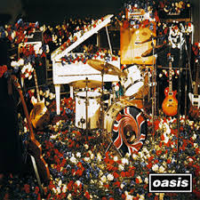
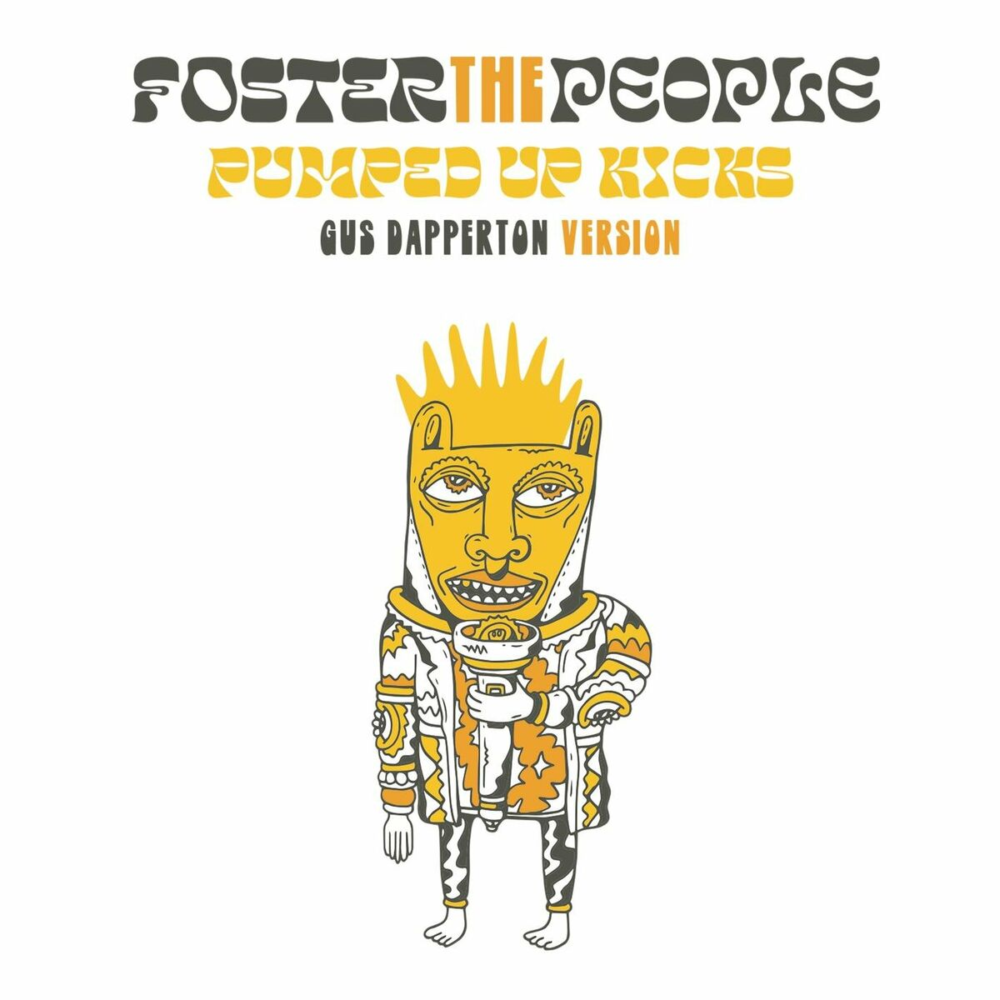
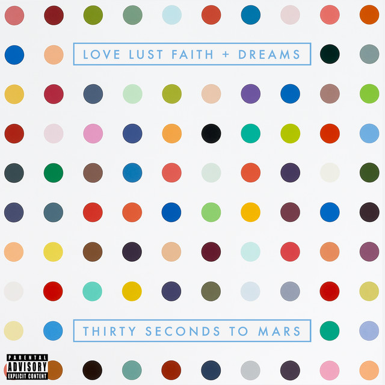
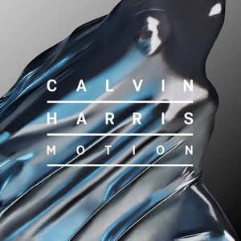
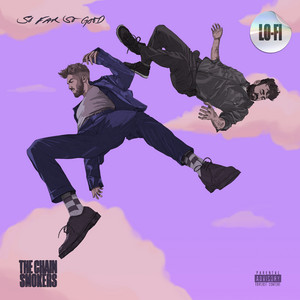
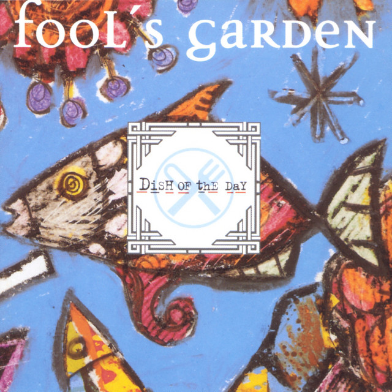
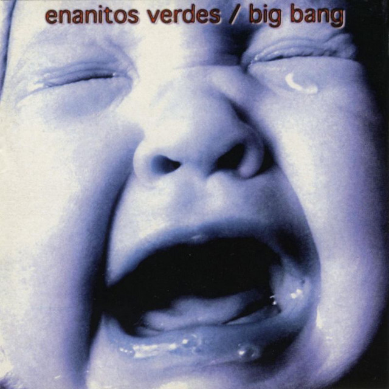
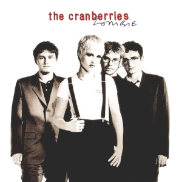

-

Don't look back in anger
Oasis
Rock
⏱️ 4:15
⭐️⭐️⭐️⭐️☆
🎵 1.2M reproducciones
📅 Lanzamiento: 1995
-

Pumped Up Kicks
Foster The People
Indie Pop
⏱️ 3:59
⭐️⭐️⭐️⭐️⭐️
🎵 2.5M reproducciones
📅 Lanzamiento: 2010
-

Danza Kuduro
Don Omar ft. Lucenzo
Reggaeton
⏱️ 3:20
⭐️⭐️⭐️⭐️⭐️
🎵 3.1M reproducciones
📅 Lanzamiento: 2010
-

Bright Lights
30 Seconds to Mars
Rock Alternativo
⏱️ 5:05
⭐️⭐️⭐️⭐️☆
🎵 1.8M reproducciones
📅 Lanzamiento: 2013
-

Summer
Calvin Harris
Dance/Electronic
⏱️ 3:44
⭐️⭐️⭐️⭐️⭐️
🎵 4.2M reproducciones
📅 Lanzamiento: 2014
Los más escuchados
-

iPad
The Chainsmokers
Electrónica
-
Play Hard
David Guetta
Electrónica
-

I Took A Pill In Ibiza
Mike Posner
Pop
-

Lemon Tree
Fools Garden
Pop
-
Break My Heart
Dua Lipa
Pop
Tus Favoritos
-

Save Your Tears
The Weeknd
Pop
-

No Se Va
Morat
Pop
-

Lamento Boliviano
Los Enanitos Verdes
Rock en Español
-

Zombie
The Cranberries
Rock